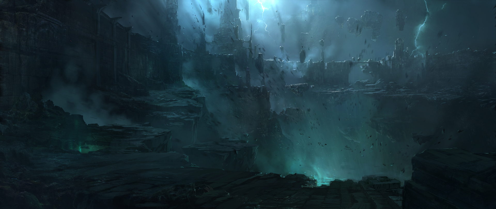

.jpg)
| Recent Work La lectura es más fácil, también, en la nueva vista de lectura. Puede contraer partes del documento y centrarse en el texto que desee. Si necesita detener la lectura antes de llegar al final, Word le recordará dónde dejó la lectura, incluso en otros dispositivos. |
Recent Work Para otorgar a su documento un aspecto profesional, Word proporciona encabezados, pies de página, páginas de portada y diseños de cuadro de texto que se complementan entre sí. Por ejemplo, puede agregar una portada coincidente, el encabezado y la barra lateral.
Para otorgar a su documento un aspecto profesional, Word proporciona encabezados, pies de página, páginas de portada y diseños de cuadro de texto que se complementan entre sí. Por ejemplo, puede agregar una portada coincidente, el encabezado y la barra lateral. |
Recent Work  Haga clic en Insertar y elija los elementos que desee de las distintas galerías.Los temas y estilos también ayudan a mantener su documento coordinado. Cuando haga clic en Diseño y seleccione un tema nuevo, cambiarán las imágenes, gráficos y gráficos SmartArt para que coincidan con el nuevo tema.
Haga clic en Insertar y elija los elementos que desee de las distintas galerías.Los temas y estilos también ayudan a mantener su documento coordinado. Cuando haga clic en Diseño y seleccione un tema nuevo, cambiarán las imágenes, gráficos y gráficos SmartArt para que coincidan con el nuevo tema. |